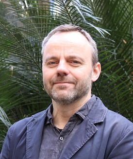

"Contemporary cognitivism takes it to be axiomatic that “the mind represents and computes” (Branquinho 2001, xv). In doing so it endorses an intellectualist vision of minds that made its debut in early modern times, making representationalism and computationalism the two main pillars of cognitivism."
En el principio era la palabra
En el prinicipio era la acción
Cognitivismo clásico
Conductismo clásico
Cognitivismo clásico
Enactivismo
Pero hay quienes que consideran que tienen la clave para terminar la guerra.
Cognitivismo clásico
Representaciones orientadas a la acción. Variedades de enactivismo sensori-motor
Enactivismo autopoiético
Enactivismo radical
Si toda la cognición tiene contenido representacional no es posible dar cuenta de la forma en que llegamos a tener contenido.
En algunas ocasiones.
 "It is the theory that the brain is a sophisticated hypothesis-testing mechanism, which is constantly involved in minimizing the error of its predictions of the sensory input it receives from the world. This mechanism is meant to explain perception and action and everything mental in between. It is an attractive theory because powerful theoretical arguments support it. It is also attractive because more and more empirical evidence is beginning to point in its favour. It has enormous unifying power and yet it can explain in detail too." (Hohwy 2013, 1)
¿Ven algo en la siguiente imagen?
Ahora una ayuda
¿Vieron un perro dálmata?
Los estímulos por sí mismos no determinan lo que se ve. Es la conjunción de su modelo del mundo que se ve actualizado por el input sensorial pero también la información extra ofrecida por el patrón de movimiento y la guía adicionales que les he dado al hablar. Hay una retroalimentación compleja de la que depende la percepción.
Error predictivo: diferencia entre el input sensorial presente y la predicción
Minimización del error predictivo: El error predictivo se computa a lo largo de varios niveles de procesamiento y es usado para actualizar el modelo del mundo y generar mejores predicciones en el futuro. Importantemente, el ciclo de generar hipótesis, predicciones y errores y la actualización del modelo del mundo es llevado a cabo a lo largo de la totalidad de niveles de procesamiento.
La diferencia es que se ha postulado un proceso computacional específico para explicar la forma en que se llevan a cabo las inferencias y que, la evidencia apunta, es instanciado a nivel neuronal.
¡Gracias!